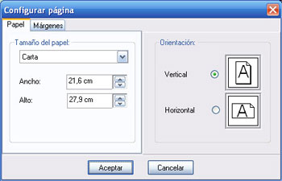

Configurar Página
En la figura 3 aparece la ventana de Configurar Página de Archivo en el Menú Principal.

Figura 6. Configurar Página.
La página que usted configura aquí es la de impresión, puede ajustar el tamaño del papel, la dirección y los márgenes como desee y probar a visualizar el informe con las opciones de impresión (Ctrl+P). Los cambios efectuados aquí no tienen efecto sobre Imprimir Formulario Lleno ni Vacío en cuyo caso podrá probar las opciones de impresión del propio informe (botón Configurar Impresión de la ventana de previsualización de la impresión).
Por defecto, la hoja del informe usada es Carta, con un largo=27, 94 cm, ancho=21, 59 cm, y orientación vertical.